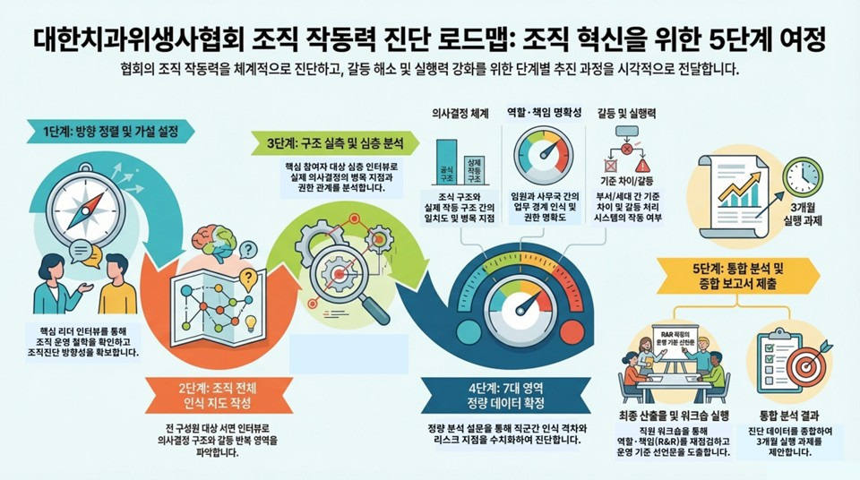
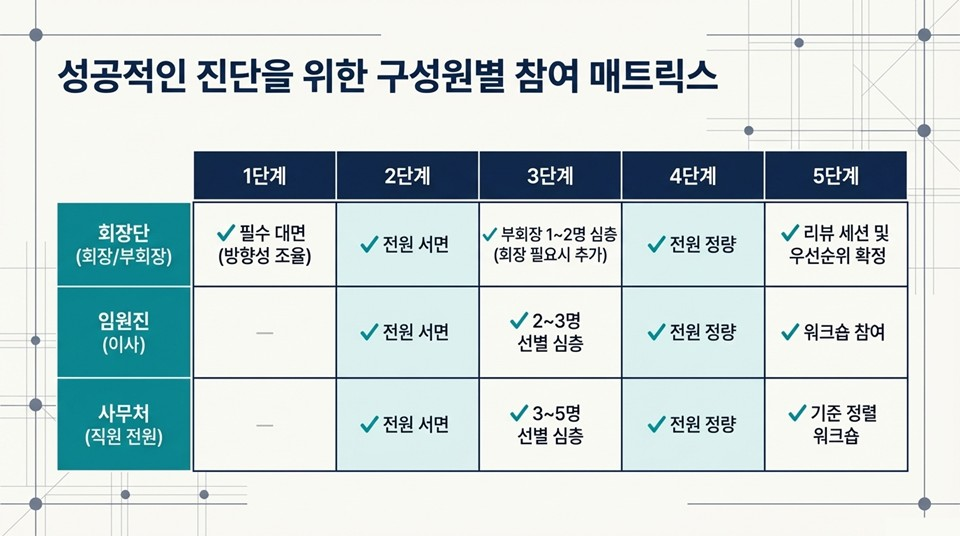
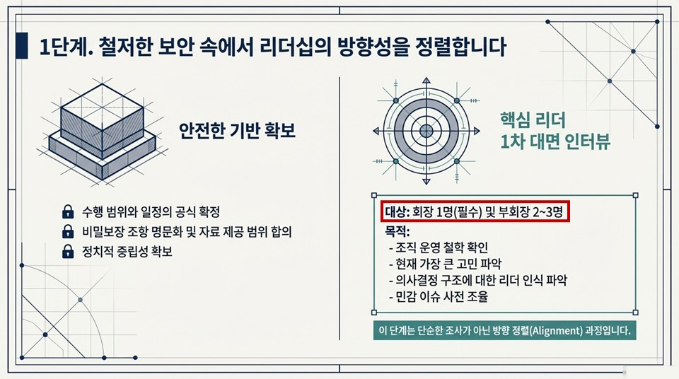
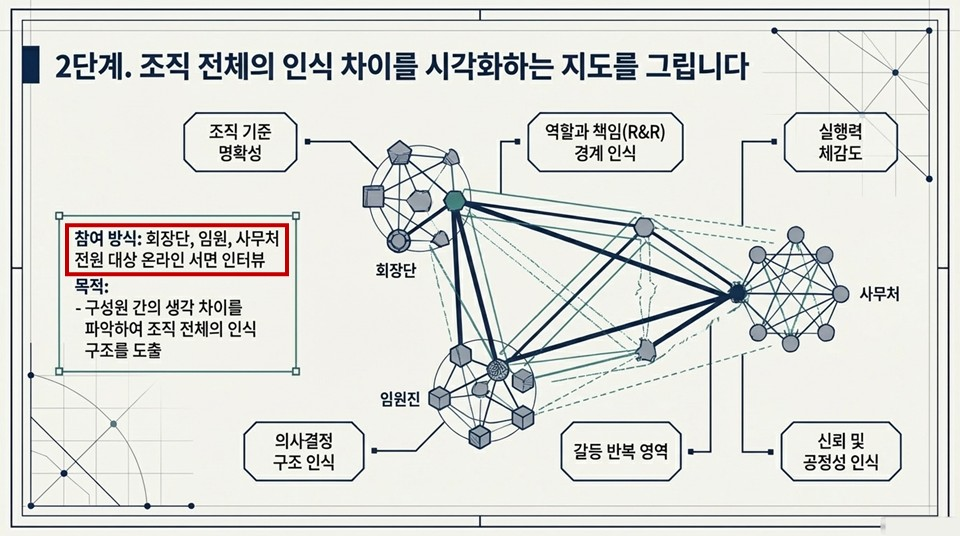
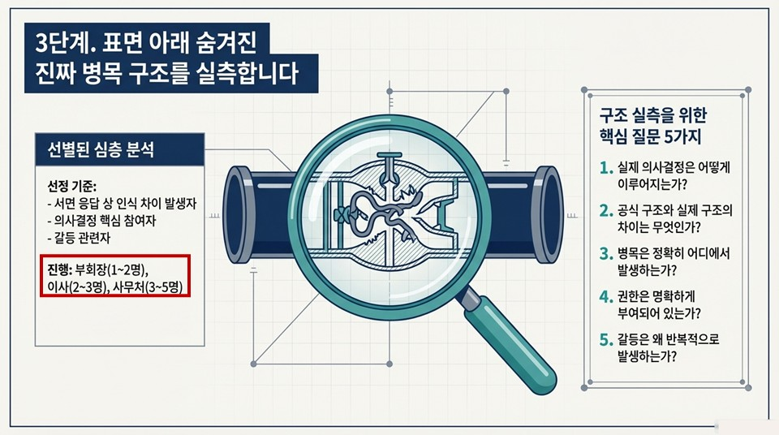
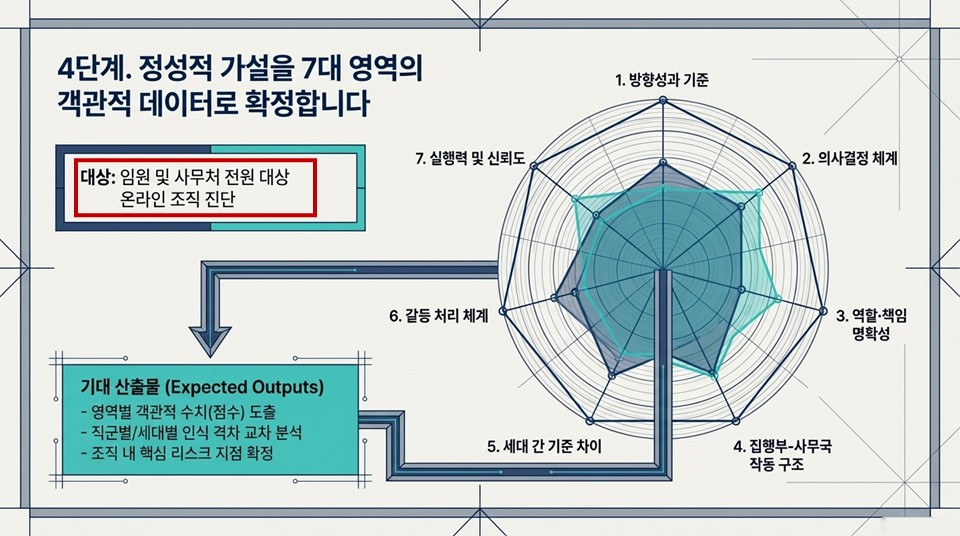
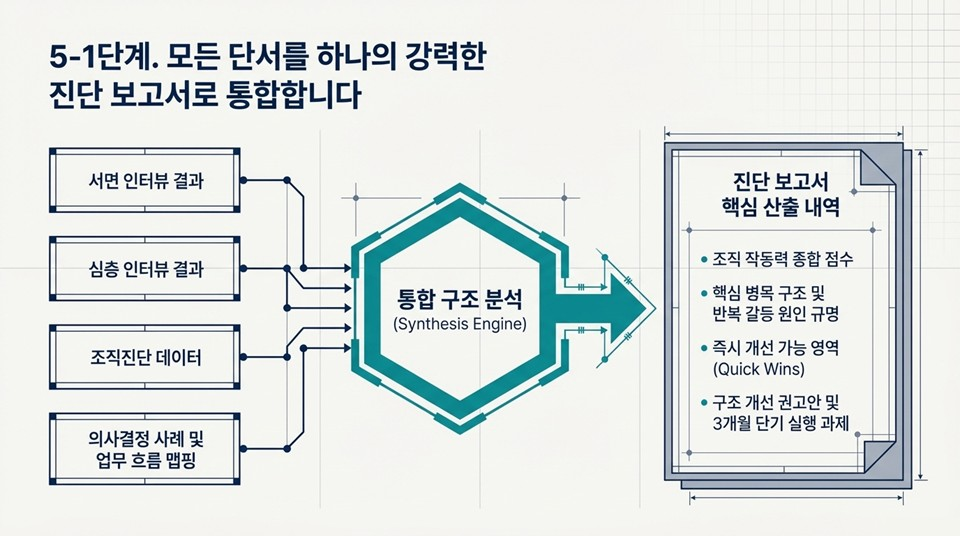
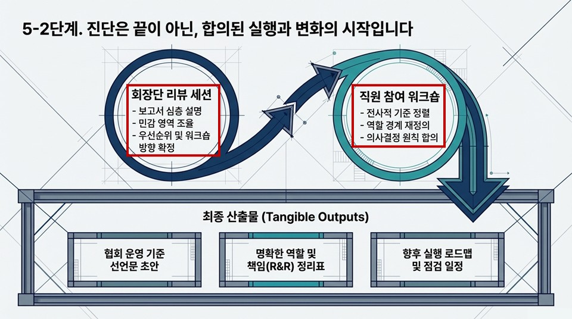
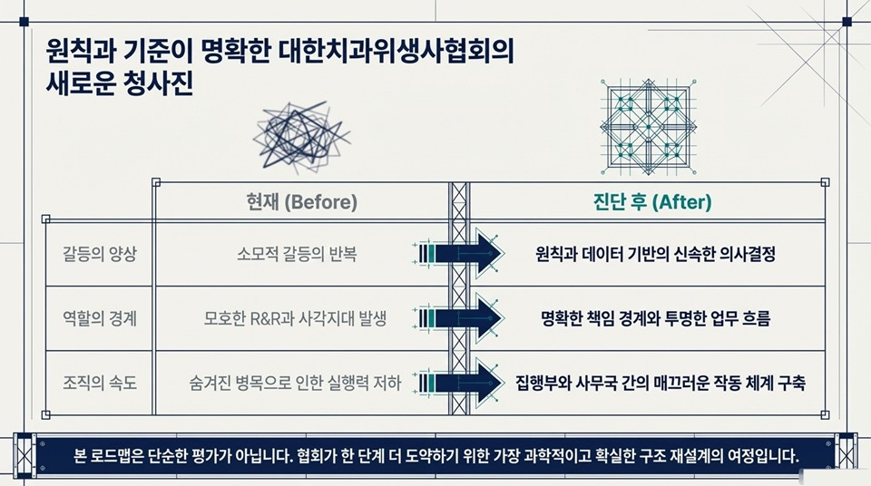

대한치과위생사협회 조직 작동력 진단은 총 5단계로 구성됩니다. 각 단계는 인터뷰, 설문, 분석, 보고, 워크숍으로 이어지며 조직의 실제 작동 구조를 정확히 파악하고 지속 가능한 운영 기준을 수립합니다.
핵심 목표 — 진단의 방향성과 정치적 중립성을 확보하고, 조직이 스스로 작동하는 기준을 만듭니다.


전체 추진 로드맵 (확정안)
대한치과위생사협회 조직 작동력 진단은 총 5단계로 구성됩니다. 각 단계는 인터뷰, 설문, 분석, 보고, 워크숍으로 이어지며 조직의 실제 작동 구조를 정확히 파악하고 지속 가능한 운영 기준을 수립합니다.
핵심 목표 — 진단의 방향성과 정치적 중립성을 확보하고, 조직이 스스로 작동하는 기준을 만듭니다.


진단의 방향성과 정치적 중립성 확보
조직 작동 구조에 대한 1차 가설 설정

조직 전체 인식 구조 파악
온라인 설문 기반 서면 인터뷰

구조적 이슈 심층 분석
하루 집중 인터뷰 (대면 또는 화상) · 각 60~90분

정량 데이터 확보 및 구조 검증



